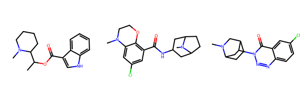

A useful tool for working with collections of chemical features.
Published
February 24, 2023
This is a revised and updated version of an older post.
This post provides a short demonstration of how to use the RDKit’s feature map implementation to score aligned 3D conformations against each other based on the overlap of their pharmacophoric features. The idea of the feature map is not a new one and there are numerous publications on the topic. These two come closest to describing the RDKit implementation:
Putta, S., Landrum, G. A. & Penzotti, J. E. “Conformation mining: An algorithm for finding biologically relevant conformations.” J. Med. Chem.48, 3313–3318 (2005). http://pubs.acs.org/doi/abs/10.1021/jm049066l
Landrum, G. A., Penzotti, J. E. & Putta, S. “Feature-map vectors: a new class of informative descriptors for computational drug discovery.” J. Comput. Aided. Mol. Des.20, 751–762 (2007). https://link.springer.com/article/10.1007/s10822-006-9085-8
For this post we’ll use a set of three 5HT-3 ligands.
smis = ['CC(OC(=O)c1c[nH]c2ccccc12)C1CCCCN1C','CN1CCOc2c(C(=O)NC3CC4CCC(C3)N4C)cc(Cl)cc21','CN1CC2CCC1CC2n1nnc2ccc(Cl)cc2c1=O']ms = [Chem.MolFromSmiles(x) for x in smis]Draw.MolsToGridImage(ms)

Start by generating a conformation for each:
ms = [Chem.AddHs(m) for m in ms]ps = AllChem.ETKDGv3()ps.randomSeed =0xf00d# we seed the RNG so that this is reproduciblefor m in ms: AllChem.EmbedMolecule(m,ps)
To get sensible scores for the feature maps, we need to start from aligned structures. For this example we’ll just use the RDKit’s Open3D Align implementation:
from rdkit.Chem import rdMolAligno3d = rdMolAlign.GetO3A(ms[1],ms[0])o3d.Align()
0.2892771161742461
o3d = rdMolAlign.GetO3A(ms[2],ms[0])o3d.Align()
0.5564120832536971
import py3Dmoldef drawit(ms, p=None, confId=-1, removeHs=True,colors=('cyanCarbon','redCarbon','blueCarbon')):if p isNone: p = py3Dmol.view(width=400, height=400) p.removeAllModels()for i,m inenumerate(ms):if removeHs: m = Chem.RemoveHs(m) IPythonConsole.addMolToView(m,p,confId=confId)for i,m inenumerate(ms): p.setStyle({'model':i,}, {'stick':{'colorscheme':colors[i%len(colors)]}}) p.zoomTo()return p.show()
drawit(ms)
You appear to be running in JupyterLab (or JavaScript failed to load for some other reason). You need to install the 3dmol extension: jupyter labextension install jupyterlab_3dmol
Now let’s build a feature map.
We need to start by building a FeatureFactory object which defines the set of pharmacophore features being used. We’ll use this to find features on the molecules.
We also need the parameters for the points used to make up the feature map. The feature points are defined by - a FeatProfile - Gaussian, Triangle, or Box. Gaussian is the default. - a width - the precise meaning is determined by the profile, but this is the sigma factor for the Gaussian. The default value is 1.0. - a cutoff radius - Feature-feature overlaps at a distance longer than this will not be considered. The default is 2.5.
Here we’ll take the defaults.
fmParams = {}for k in fdef.GetFeatureFamilies(): fparams = FeatMaps.FeatMapParams() fmParams[k] = fparams
Next go through and find the features on each molecule. We’ll only consider a subset of the features defined by the FeatureFactory. In “real” use we’d more likely use a FeatureFactory that only defines the features we are interested in, but this example of how to limit the features returned may still be interesting:
keep = ('Donor','Acceptor','NegIonizable','PosIonizable','Aromatic')featLists = []for m in ms: rawFeats = fdef.GetFeaturesForMol(m)# filter that list down to only include the ones we're intereted in featLists.append([f for f in rawFeats if f.GetFamily() in keep])
Let’s look at the features:
import py3Dmolfrom rdkit.Chem.Features.ShowFeats import _featColors as featColorsdef colorToHex(rgb): rgb = [f'{int(255*x):x}'for x in rgb]return'0x'+''.join(rgb)def drawit(m, feats, p=None, confId=-1, removeHs=True):if p isNone: p = py3Dmol.view(width=400, height=400) p.removeAllModels()if removeHs: m = Chem.RemoveHs(m) IPythonConsole.addMolToView(m,p,confId=confId)for feat in feats: pos = feat.GetPos() clr = featColors.get(feat.GetFamily(),(.5,.5,.5)) p.addSphere({'center':{'x':pos.x,'y':pos.y,'z':pos.z},'radius':.5,'color':colorToHex(clr)}); p.zoomTo()return p.show()
drawit(ms[0],featLists[0])
You appear to be running in JupyterLab (or JavaScript failed to load for some other reason). You need to install the 3dmol extension: jupyter labextension install jupyterlab_3dmol
drawit(ms[1],featLists[1])
You appear to be running in JupyterLab (or JavaScript failed to load for some other reason). You need to install the 3dmol extension: jupyter labextension install jupyterlab_3dmol
drawit(ms[2],featLists[2])
You appear to be running in JupyterLab (or JavaScript failed to load for some other reason). You need to install the 3dmol extension: jupyter labextension install jupyterlab_3dmol
The fact that this one has neither acceptors nor an aromatic feature in the second planar six-ring indicates that we should take a look at the feature definitions. That’s a topic for another blog post.
Now it’s straightforward to create FeatMap objects from the feature lists:
fms = [FeatMaps.FeatMap(feats = x,weights=[1]*len(x),params=fmParams) for x in featLists]
We can, of course, draw a feature map as well. In these simple cases the feature maps look the same as drawing all of the molecule’s features:
def drawFeatMap(m, fMap, p=None, confId=-1, removeHs=True):if p isNone: p = py3Dmol.view(width=400, height=400) p.removeAllModels()if removeHs: m = Chem.RemoveHs(m) IPythonConsole.addMolToView(m,p,confId=confId)for feat in fMap.GetFeatures(): pos = feat.GetPos() clr = featColors.get(feat.GetFamily(),(.5,.5,.5)) p.addSphere({'center':{'x':pos.x,'y':pos.y,'z':pos.z},'radius':feat.weight*.5,'color':colorToHex(clr)}); p.zoomTo()return p.show()
drawFeatMap(ms[0],fms[0])
You appear to be running in JupyterLab (or JavaScript failed to load for some other reason). You need to install the 3dmol extension: jupyter labextension install jupyterlab_3dmol
Now let’s look at scoring the features from each molecule against the feature map. Since scores are affected by the number of features in each FeatMap, we’ll normalize here using the number of features in the molecule with less features.
The ScoreFeats() method can also generate a feature map vector: the breakdown of the score by the contributions of individual features in the feature map.
Feature map vectors can also be used as descriptors for machine learning, as shown in the second reference mentioned above. If I find a good example system I’ll try and do a blog post on that as well.
Hopefully others find this brief introduction to the RDKit’s FeatMap implementation useful.